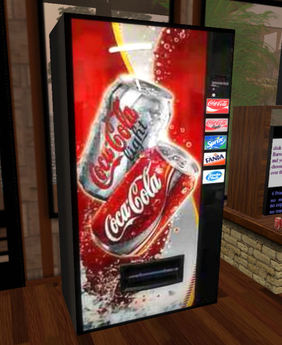

Web-based information displays many benefits of multimedia technology. Using today's fast broadband connection, it's possible to stream sophisticated content to a computer anywhere in the world. This is an advantage for many people as the information can be received and read wherever and whenever it is convenient for them, which can be a crucial factor for a busy executive. A significant amount of interactive multimedia content is now delivered via the internet. Web information system, or web-based information system, is an information system that uses Internet web technologies to deliver information and services, to users or other information systems/applications. It is a software system whose main purpose is to publish and maintain data by using hypertext-based principles. A web information system usually consists of one or more web applications, specific functionality-oriented components, together with information components and other non-web components. Web browser is typically used as front-end whereas database as back-end.
In computer science, interactive computing refers to software which accepts input from humans — for example, data or commands. Interactive software includes most popular programs, such as word processors or spreadsheet applications. By comparison, noninteractive programs operate without human contact; examples of these include compilers and batch processing applications. If the response is complex enough it is said that the system is conducting social interaction and some systems try to achieve this through the implementation of social interfaces. The nature of interactive computing as well as its impact on humans are studied extensively in the field of Human-computer interaction.
Linear algebra is the branch of mathematics concerning vector spaces and linear mappings between such spaces. It includes the study of lines, planes, and subspaces, but is also concerned with properties common to all vector spaces. The set of points with coordinates that satisfy a linear equation forms a hyperplane in an n-dimensional space. The conditions under which a set of n hyperplanes intersect in a single point is an important focus of study in linear algebra. Such an investigation is initially motivated by a system of linear equations containing several unknowns. Such equations are naturally represented using the formalism of matrices and vectors.